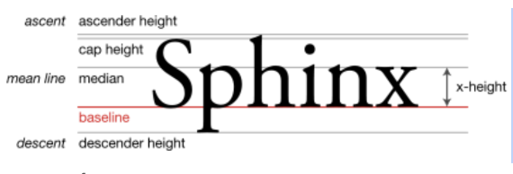
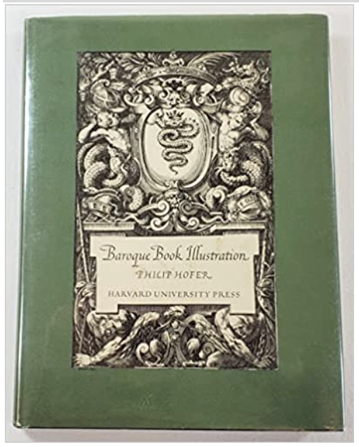
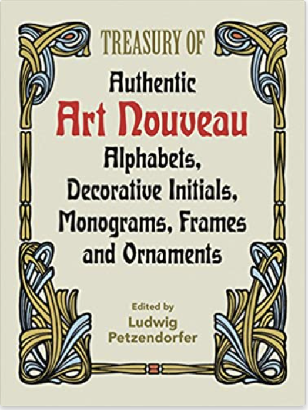
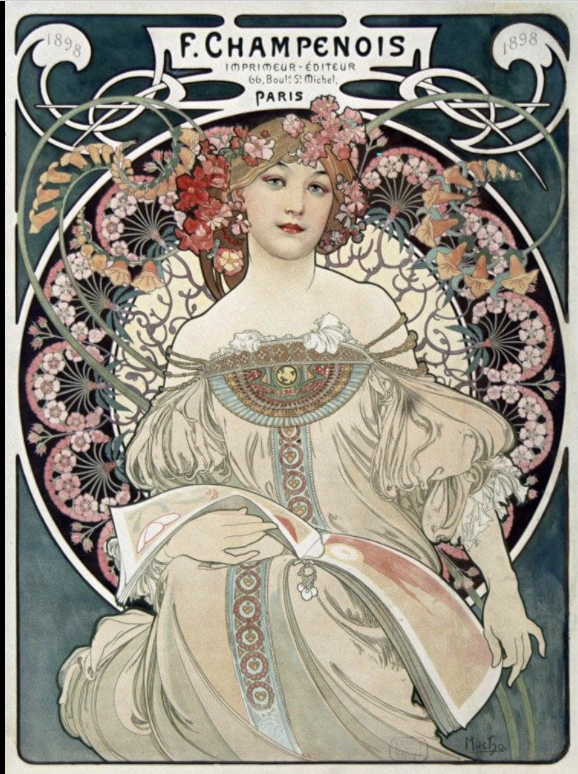
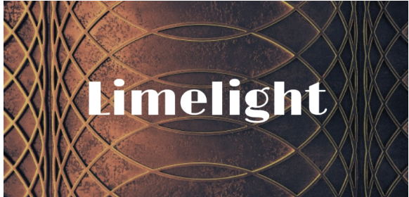
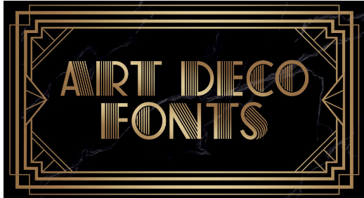
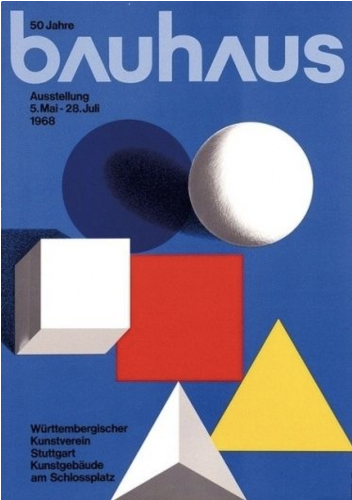
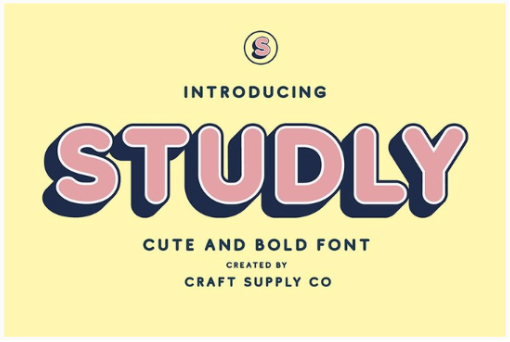
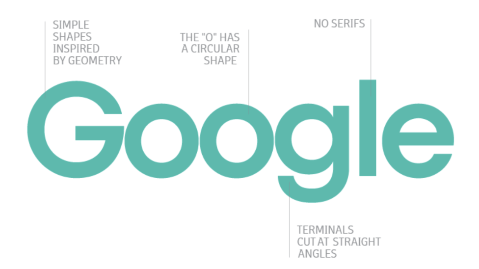
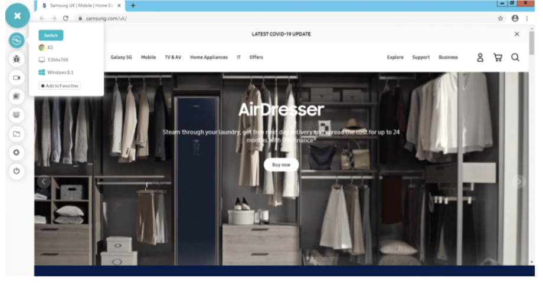

The reason we have chosen the design like this is blablabla:
The period of Baroque dominated from the early 17th century until the 1740s in big parts of Europe. The painters of Baroque wanted to seperate themself from the Renaissance with the use of contrast, movement, details, deep colors and achieve a sense of awe. [5]
Baroque aimed to achieve a feeling of movement, emotions and drama. The color pallet was dominated by intense and warm colors. They had a focus on the primary colors and often combined the colors and used them in close proximity. The focus was to use a strong contrast of light and dark next to each other. Baroque art was influenced by ornamental elements, which added details to an object where the only purpose was to decorate it. [5]
The Baroque font family has several characteristics. The font usually has an enlarged x-height, see Image 1. The ascenders, the part that extends over the x-height, is reduced to cap height in the Baroque fonts. We have used Ariel, sans–serif for the long readings which respects these requirements. As well, Ariel does not have any serifs, which is also required for Baroque font. Even more characteristic for fonts in this period is forms and flourished handlettering with a contrast between thick and thin strokes. [1,2] Therefore, we have used the Fleur De Leah font for the headers, which have these characteristics.
Large borders are typical for Baroque to achieve a dramatic feeling. We have recreated this through a big flourished header on the pages. This enlightens the focus Baroque had on ornamental elements, which adds details to the page.
Baroque is characterized by dramatic colors with a focus on the contrast of light and shadow. Light and dark colors are placed side by side to increase the dramatic expression. The color palette contains deep colors, especially red and greens combined with gold.[3] An example of the use of green color is shown in Image 2. For the Baroque theme we have chosen a deep red color to frame the page with the navbar, sidebar and metadata view. The buttons are deep green, inspired by Image 2. Since the Baroque combines light and dark, we have a gold text combined with the deep red and green colors.
The margins in Baroque were wider than before [1]. This is shown on the homepage and topic pages where there is large spacing between the flourished header and the other elements on the side. The margin between the page header and the buttons are also bigger than for the other themes.
As discussed under section 1.2.2 the borders were flourished and big, this does not increase the readability but adds an aesthetic feature, as shown in Image 2 [1]. We have recreated this feeling with our flourished header.
The use of two columns for compact text has been dated all the way back since the 15th century and was widely used for older texts [4]. Therefore we have done the same for the Baroque period, as you can see when reading a text in the Baroque theme.
The ornamental elements were characteristic in the Baroque which was derived from the Renaissance. This is why we have focused on the flourished header for this theme
Image 2: Baroque Book Illustration
[1], Baroque [2], Baroque [3], Baroque [4], Baroque [5], BaroqueArt Nouveau originates from the period between 1890-1919, during the Belle Epoque period that ended with the start of World War I in 1914. Art Nouveau came as a reaction against the formal and classical approaches to design. In this period, designers started using more decorative motifs inspired by nature, as they believed that the greatest beauty was found in nature.
Art Nouveau is heavily inspired by the natural forms and curves often found in flowers and plants. Dynamic patterns with movement are very common.It is otherwise characterized by the use of asymmetrical shapes, and extensive use of arches and curved forms. The typography tends to look like calligraphy rather than a strict manufactured appearance. The color schemes are generally muted and soft, such as different tones of green, brown, blues,purples and pastel shades. In general, colors that could be found in nature. Art nouveau is known for the use of irregular shapes in designs. We can se an example of this in image 3.
As mentioned earlier, art nouveau was heavily inspired by nature. In our project we have chosen the font family "Quintessential". We chose this font because it has long lines and curves throughout the letters. As well as embellished stroke endings on each letter. For the font header we chose "Sofia", which shares many similarities with "Quintessential". These fonts seem reminiscent of caligraphy, and are all characteristics that pair well with the theme.
Image 3
Because of the elaborate design of art nouveau typography, it can be difficult to read. Therefore we have chosen a large font size.
Art nouveau is characterized by soft tones of color to imitate nature. The color palette contains neutrals such as browns and greens, and some pastel shades. Because the theme of nature is so important in art nouveau, we have chosen to incorporate this in our design by keeping the metadata, sidebar and navbar a soft light brown. The buttons are a soft sage green, and the background for the texts are a warm beige. Image 4 is a great example og a type of color palette that was common in art nouveau
We have given all the buttons a rectangular shape with rounded edges. This corresponds with the theme by creating curves which are similar with the ones found in nature.
We have chosen a warm beige in our layout. Other than that, the layout is rather simple to let the background be more visible.
As mentioned earlier, art nouveau is heavily influenced by nature. Therefore we have included an image of flowers and branches as our background
[1], Art Nouveau [2], Art Nouveau [3], Art NouveauArt Deco has its origin in France in the 1920s and is characterized by the luxuries and modern styles from the 1920s and 1930s. With a sleek and anti-traditional elegance the style symbolized wealth and sophistication and was mainly used in western Europe and the United States [1] .
Art Deco represents modern styles combined with fine craftsmanship. Elements used in Art Deco are characterized by a simple, elegant, symmetrical and ornamental style. They used sleek geometric rounded shapes combined with sharp angles and vertical decorative line details, giving it a streamlined look [2].
The fonts used in Art Deco are inspired by rounded shapes and sharp angles, as you can see in figure 5. The style is therefore in contrast with Art Nouveau's use of elegant curves and long lines [3]. They often use bold elongated letters and in many cases the fonts are best when they are used as headlines because of its unique and different design. In our project we have used Arial for the font family of the text, and for the headers we used Limelight. Both fonts are sans serif and limelight has a geometric style which fits the characteristics of Art Deco.
Image 5
As mentioned in 3.2.1, the Art Deco fonts often work best as headlines, and it is therefore common to use a larger font-size than we use for the texts.
The colors used in the Art Deco period were often combined with high-shine silver, chrome or black accents[4]. Color combinations often consisted of bright and bold colors such as red, yellow, green, blue and pink. Neutral colors such as creams and beiges, black and white or metallics were also highly popular [5]. For the project we have used a black background together with blue buttons and a beige color for the navbar and metadata view. The combination of gold and black was widely used as well, as shown in image 6, we have achieved this with a gold header on a black background.
All the buttons have been given a border radius of 5px while the borders around the headers have sharp edges. This complies with Art Decos mixed use of rounded shapes and sharp angles. The borders of Art Deco are decorated with lines of different sizes, as we can see in image 6. This is done with the header border, and we have also added golden lines in the background of the topic pages.
The layout of the pages are kept simple and elegant, with a few details around the headlines. The use of a sophisticated and elegant layout fits well with the Art Deco style.
As mentioned earlier the use of ornamental design and bold geometric shapes are common features in Art Deco, and pictures and headlines are often framed using these designs. In the project we have given the header a frame consisting of multiple border lines, giving it a bold effect.
[1], Art Deco [2], Art Deco [3], Art Deco [4], Art Deco [5], Art DecoBauhaus originates from the influential art and design movement that began in 1919 in Germany. This movement celebrated an abstract, geometric style with none or little emotion. It originated from the Bauhaus School, which encouraged their design students to use their talents to help rebuild the society after the end of World war II.
The Bauhaus style encouraged to challenge everything. It's heavily influenced by minimalism, geometric shapes and a simple typography. Further the most dominant colors are the primary colors such as blue, red and yellow. This is a result of the "Back to basics" mentality that arose. We can see an example of this in image 7
The bauhaus font is characterized by geometric sans-serif letterforms, and geometric shapes such as circles, triangles and rectangles. The style is supposed to be simple and minimalistic. In our project we have used Arial for the long readings, and kept all the letters lowercase. For the headers we used "Major mono display" which is characterized by a geometric sans serif all uppercase typeface. This fits well with the bauhaus theme because of all its geometric shapes and otherwise simple and minimalistic letters.
Image 7
To achieve the minimalism that respects the theme of bauhaus, we have chosen to not have any large borders or other disturbing elements. A trend that flourished under the Bauhaus period was the statement that it was unnecessary to have two alphabets, one for uppercase and one for lowercase letters. Therefore the whole text is set to lowercase letters.[1]
As mentioned in 4.2, the most dominant colors were the primary colors blue, red and yellow. In our project we have expressed this by selecting a dark blue for the sidebar, navbar and metadata view, and a darker red for the buttons, together with a white background.
Geometric shapes are important in Bauhaus. Therefore we have chosen circular buttons on the publication site, and oval shaped buttons in the metadata view. Further, we have included a rectangular frame around the headers. This all together makes sure that the geometric aspect stands out in our bauhaus theme.
As mentioned in 4.2, Bauhaus was influenced by minimalism. Therefore we have kept the layout simple and minimalistic. The only details are the rectangular frame around the headline.
We have no additional design for the images and caption. This is to respect the simplicity and minimalism of the bauhaus theme
[1], Bauhaus [2], Bauhaus [3], Bauhaus [4], Bauhaus [5], BauhausDuring the beginning of the 90s the graphic design went from being aesthetic to becoming a more grunge look. Towards the mid-90s the grungy style was replaced with a more bubbly style [1]. The style was inspired by pop culture, the underground music scene, rave culture and the colorful style from the 80s [2].
The 90s were all about creativity, experimenting and disregarding previous rules. They used abstract, bold, geometric shapes combined with playful patterns like polka dots and psychedelic backgrounds. The use of vibrant gradients was also a characteristic feature for the period [2].
The fonts used in the 90s were mainly sans serif fonts, and TV shows like Full House and Rugrats inspired and influenced the use of handwritten style fonts[2]. The most popular font family and the one we have used for the 90s pop theme is the comic sans. It was inspired by comic book letters and had a handwritten look. The fonts had rounded edges and many of them used drop shadows, as shown in image 8. The drop shadows were used to separate the text from the colorful backgrounds and create a 3D effect.
Image 8
The font size of the texts used in the 90s mostly ranged between 9-13px [3]. Today we mostly use around 16-20px to increase the readability.
For the colors they used bright, bubbly and energetic colors like bright yellow, pink,purple, fluorescent green, cerulean blue or neon lasers [2]. The bright and bold colors had an eye-catching and playful effect on the viewer. For the 90s pop theme we have used shades of pink, blue and yellow giving it a 90s look.
As mentioned in 5.2.1 we have used comic sans for the font family. Since comic sans has rounded corners, we decided to have sharp angled borders. Mixing geometry shapes creates a playful look and complies with the style of the 90s pop.
90s websites had a colorful and energetic design. Pages consisted of abstract typography and experimental elements and themes [4]. As mentioned in 5.2 the use of polka dots was everywhere, therefore we have this under the buttons on our homepage.
As mentioned earlier, 90s pop is characterized by abstract geometric shapes and a playful style. Images had a creative vibe and often consisted of different elements combined together.
[1], 90s pop [2], 90s pop [3], 90s pop [4], 90s popThe typographic theme of 2020 – 2030 is hard to predict. To achieve a possible layout for this theme we have used inspiration from the trends that influence today's graphic web design and predictions done for the future.
Today's web design, just like other designs of 2020, is influenced by a minimalistic design. The lesser the content, the better. This gives a feeling of cleaness and tidiness. The web pages have as little content as possible, and a lot of white spaces, which leaves no room for confusion. This also influences the font family, margins and borders.
Trends predicted for the future and in use now are influenced by the development of more technical features. Today dynamic scrolling and/or scroll-generated websites are widely used. Scroll-generated websites are dependent on scrolling for generating objects on the web page. With dynamic scrolling the content is already there, but the user retrieves it with scrolling.[1] One of the hottest features for the future is variable fonts, this gives the web page a broader typographic palette. [2]
The focus for modern fonts is to achieve good readability. As explained earlier we are in an epoch where most web designs follow a minimalistic theme. The font should be geometrically constructed, monolinear weighted and with straight angles, which is shown in Image 9. The Geometric sans serif font Futura is widely used, and as Source 5 states this is a trend that is not going anywhere soon. Therefore, this is the font we have used. [3]
Image 9
The hero image, which is a big banner image on the front page, is an example of how images may be scaled up on today's web pages.
Modern web pages have a focus on white spacing and cleaness. This is a big contrast to the earlier typographic periods, as the 90s Pop. Therefore we assume that this trend will continue, and be even more developed in the future. The focus on colors and big fonts is reduced, and the focus on variable fonts and technological features for the website will increase.[2] As well, several readings and articles predict that blue is the color of the future. [4] The colors on our website are clean and have a lot of white spacing, combined with a blue tone.
Following the minimalistic theme we have created solid borders instead of covering colors for the sidebar and metadata buttons. This allows for more white spacing on the web page and makes it clean.
The buttons on the homepage are white with a margin of 100px which suits well with the hero image, which is inspired from image 10.
The pages are rather simple and elegant, and the main focus is clarity and focus on the content. The text is presented with dynamic scrolling. The text is already displayed on the page, but the reader captures it by scrolling down the web page
Another trend that fluences over the web is hero images, shown in image 10. It is widely used to capture the reader's attention. It is a trend that is often combined with white spacing, so we have captured this on the front page of this theme. [1]
Image 10
[1], Modern Web Design [2], Modern Web Design [3], Modern Web Design [4], Modern Web Design